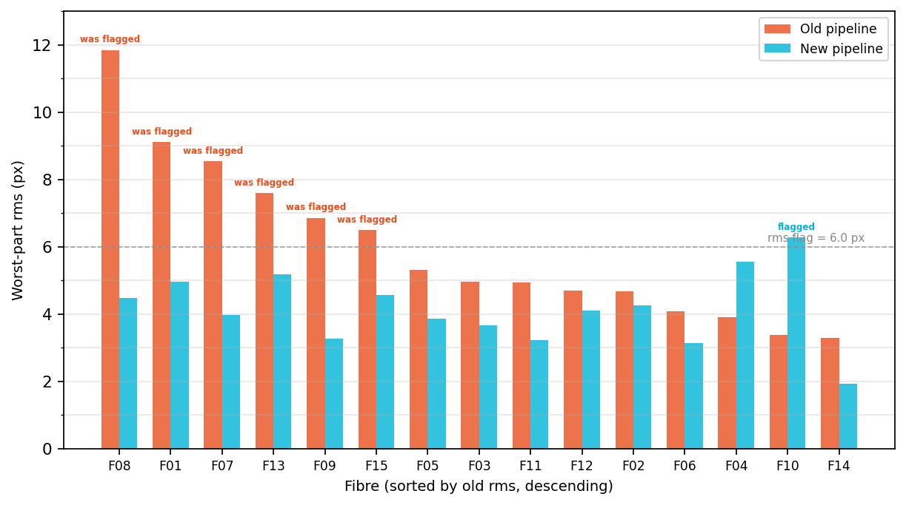
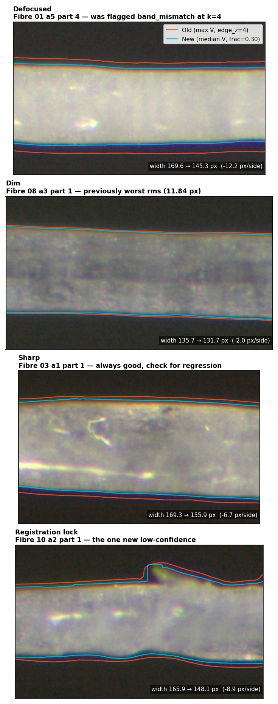

fibrecv · study 03
2026-08-19 · branch worktree-edge-criteria · run multiangle_c1_s03d
Low-confidence fibres
6 → 1
of 15 fibres
Per-part rms p50
3.70 → 2.74
px, 75 parts
Parts above 6 px rms
11 → 1
of 75 parts
MasP2 desat
identical
SHA-256 verified
Study 02 (multi-angle cross-section) measured 15 C1 fibres across 6 angles × 5 parts and found 6 of 15 fibres flagged low-confidence, each carrying at least one angle with defocus-induced width errors of 10–26 px. Investigation identified two contributing factors in the bright-mode edge detection pipeline:
max(R,G,B) selects the outermost channel at each
pixel. Where chromatic aberration displaces one channel's edge relative to the other two, the
max tracks the widest channel, adding a systematic wide bias.edge_z = 4 sits at roughly
5–10% of wall amplitude on C1 bright images (amplitude 40–70 z). At that height the wall slope
is shallow, so small perturbations — noise, defocus halo — shift the detected edge substantially.Study 01 had previously shown that measuring at the 50% midpoint causes "inward bite" on cylindrical fibres (the real wall profile is a shouldered ramp, not a step), so the replacement threshold must sit below 50%.
Three changes, all gated on feature_mode == "bright". The desat (MasP2) path is
byte-for-byte unchanged.
In features.py:83, the bright-mode feature map changed from
rgb.max(axis=2) to np.median(rgb, axis=2). The median of three channels
selects the middle-ranked value, rejecting whichever single channel is displaced furthest by
chromatic aberration. On synthetic data this removes ≈0.9 px of edge bias per pixel of
single-channel (R-only) displacement, but contributes essentially nothing (0.003 px) absent a
fringe, and ≈0.05 px against a two-channel (R+B) fringe where the median rides along
(scripts/synthetic_fringe.json).
In edges.py:263–273, the boundary level computation became:
if cfg.feature_mode == "bright":
level = base_val + min(cfg.edge_cap * A_side,
max(cfg.edge_z, cfg.edge_frac * A_side))
else:
level = base_val + min(cfg.edge_z, cfg.edge_frac * A_side)Three independent controls:
edge_frac — primary relative threshold (shipped: 0.30)edge_z = 4.0 — absolute floor protecting faint walls from going below noiseedge_cap = 0.50 — upper clamp preventing convergence on 50% (the study 01 failure point)Ordering matters: min(cap, max(floor, frac)) guarantees the level stays below
edge_cap × A_side < A_side, so a crossing always exists on the wall run. On typical
C1 walls (amplitude 40–70 z) the level is frac × A ≈ 12–21 z (vs the old fixed 4 z).
On faint walls where A_side < 8 z, the cap overrides the edge_z floor
— the level drops to 0.5 × A_side, which may be below 4 z. This is the price of
guaranteeing a crossing exists; it is live on ~800–1500 columns per dim C1 image.
The median z-map has a smaller background MAD than max(R,G,B), so z-scores inflate.
More of the defocus halo then crosses the absolute k_band threshold, ballooning the
coarse band mask and raising false band_mismatch flags. On the 6 most defocused
images, band_half ballooned from 89–98 px to 142–223 px while the actual measured
widths stayed correct (≤3 px of their sharp-sibling counterparts). band_ratio
collapsed to 0.326–0.485, below the band_ratio_min = 0.5 gate.
The consequence was silent data loss: fibre 01 part 4 lost angles a2/a3/a5, leaving only
2 distinct directions from 3 — rank-deficient for the 3-parameter ellipse fit — so it produced
0 valid fits from 3495 columns. Recalibrated to k_band = 6.0 for bright mode:
mismatches 6→0 at k ≥ 5; widths move ≤0.13 px on the calibration set (≤1.43 px on the dimmest
images). Non-circular support: on a data-selected dim set, min coverage 0.8762 at every k;
3 images turn low-confidence only at k = 8 (scripts/dim_coverage.json).
Side effect: raising k_band 4→6 also moved the FLAG_NO_BG guard
from 2.0 to 3.0 z (edges.py:282 uses cfg.k_band / 2.0). Incidence
change not measured.
Bright-mode defaults live in run_measure.py, not the dataclass, so MasP2 cannot
silently regress:
BRIGHT_DEFAULTS = {"edge_frac": 0.30, "k_band": 6.0}Applied in build_config when --feature-mode bright is given; explicit
flags still override. Code that constructs CONFIG(feature_mode="bright") directly
inherits the desat-calibrated defaults — both edge_frac and k_band must
be set explicitly in that case.
Per-part ellipse-fit residual (median rms_resid_px over valid rows), 75 parts.
Run s03d (post-clamp-fix code, shipped config) against the study 02 baseline.
| p50 | p90 | p95 | Max | Parts > 6 px | |
|---|---|---|---|---|---|
| Old (max z-map, edge_z = 4, k = 4) | 3.697 | 6.638 | 7.756 | 11.841 | 11 |
| New (median z-map, frac = 0.30, k = 6) | 2.739 | 4.264 | 4.892 | 6.273 | 1 |
Paired analysis over 75 parts (scripts/rms_statistics_s03d.json):
| Measure | Value |
|---|---|
| Parts improved / worsened | 60 / 15 |
| Median paired change | −1.057 px |
| Wilcoxon signed-rank | W = 436, p = 1.77 × 10−7 |
| Bootstrap 95% CI on median | [−1.577, −0.571] px (20 000 resamples) |
| Per-fibre sign test | 13/15 improved, p = 0.0074 |
| Column-churn confound | Spearman ρ = −0.133, p = 0.255 (not supported) |
| Total measurement positions | 162 223 → 161 696 (−0.33%) |
The column-churn test checks whether parts whose valid-column count shrank also show larger rms improvement (which would mean the gain came from discarding hard columns rather than from better edge detection). The correlation is near zero and non-significant: parts that gained columns improved most. This does not refute the confound — p = 0.255 is a null result — but it provides no evidence for it either.
| Fibre | Positions (old) | Positions (new) | Worst-part rms (old) | Worst-part rms (new) | Axis ratio (old) | Axis ratio (new) | Flag |
|---|---|---|---|---|---|---|---|
| 01 | 11 215 | 11 184 | 9.11 | 4.95 | 1.189 | 1.129 | cleared |
| 02 | 11 167 | 12 306 | 4.68 | 4.25 | 1.127 | 1.128 | |
| 03 | 11 775 | 11 713 | 4.97 | 3.67 | 1.094 | 1.098 | |
| 04 | 10 218 | 9 498 | 3.92 | 5.55 | 1.148 | 1.159 | |
| 05 | 9 570 | 10 676 | 5.31 | 3.86 | 1.117 | 1.145 | |
| 06 | 7 977 | 8 976 | 4.08 | 3.13 | 1.114 | 1.122 | |
| 07 | 12 351 | 12 104 | 8.53 | 3.97 | 1.240 | 1.196 | cleared |
| 08 | 9 791 | 8 991 | 11.84 | 4.48 | 1.142 | 1.151 | cleared |
| 09 | 10 165 | 10 627 | 6.86 | 3.28 | 1.115 | 1.176 | cleared |
| 10 | 10 795 | 11 326 | 3.38 | 6.27 | 1.124 | 1.120 | new flag |
| 11 | 11 883 | 11 065 | 4.94 | 3.22 | 1.175 | 1.170 | |
| 12 | 10 827 | 10 044 | 4.69 | 4.10 | 1.132 | 1.139 | |
| 13 | 11 547 | 10 405 | 7.60 | 5.17 | 1.111 | 1.107 | cleared |
| 14 | 11 633 | 10 762 | 3.30 | 1.94 | 1.080 | 1.072 | |
| 15 | 11 309 | 12 019 | 6.50 | 4.56 | 1.230 | 1.167 | cleared |
Fibre 10 is the only new low-confidence fibre. Its cause is a stage-3 cross-angle registration lock, not an edge-detection defect: the a2/a5 angle pair locked ~500 px off in x-registration (pair rms 20.4 at lag 0 vs 4.9 at the correct lag), while per-image coverage is 0.97–1.00 across all 30 images. The ~9.7% global width shrink altered the cross-correlation landscape enough to flip the peak choice. This is a registration robustness issue, out of scope for this study.
Three images spanning the MasP2 size range, run on both branches. diameter_raw
arrays and the float32 D z-map match by SHA-256; median diameters 59.760 / 103.529 /
153.990 px = 43.68 / 75.68 / 112.57 µm at ppu 1.368. Delta exactly 0.0 on every image.
(scripts/masp2_identical.json)
Per-side edge bias δ = (measured − true) / 2 on a synthetic circular fibre (diameter 190 px),
averaged over 12 seeds. Three control geometries (scripts/delta_seeds.json):
| Control geometry | Old pipeline | Shipped (frac = 0.30) | Effective 0.50 |
|---|---|---|---|
| Single image, full width | +4.338 ± 0.006 | +2.124 ± 0.002 | +0.014 ± 0.002 |
| 6-angle stack (test fixture) | +3.885 ± 0.006 | +1.649 ± 0.003 | −0.514 ± 0.003 |
At the shipped edge_frac = 0.30, the per-side bias is +1.6 to +2.1 px
(+3.3 to +4.2 px on diameter), roughly halving the old pipeline's ~4 px/side bias. At the
effective 0.50 (which edge_cap prevents on the shipped path) the bias approaches
zero, but study 01 showed this region causes inward bite on real shouldered edges.
Correction. An earlier version of this report quoted δ = 3.90 → −0.51 px/side.
That −0.51 figure was measured at edge_frac = 0.65 (capped to an effective 0.50 by
edge_cap), not at the shipped 0.30. The test fixture that produced it constructs
CONFIG(feature_mode="bright") directly, inheriting the desat-calibrated default
rather than the bright-mode preset.

xsec_rms_flag_px = 6.0 gate. All 6 formerly
flagged fibres (F08, F01, F07, F13, F09, F15) drop below the line; fibre 10 is the only new
flag — a stage-3 registration lock, not an edge defect.
band_mismatch
at k=4; shift −12.0 px/side.
Second: dim (fibre 08 a3 part 1) — previously worst rms at 11.84 px;
shift −2.0 px/side.
Third: sharp (fibre 03 a1 part 1) — always good, no regression;
shift −6.7 px/side.
Bottom: registration lock (fibre 10 a2 part 1) — the one new low-confidence;
edge detection is clean but the boundary shows the a2/a5 x-registration mismatch that drives
the rms up. In every panel the new boundary tracks the visible bright-to-dark transition;
no inward bite is observed.This section documents the calibration process honestly, including what went wrong.
The original sweep (scripts/calibrate_edge_frac.py) selected
edge_frac = 0.30 on two criteria, both of which a subsequent code review showed
were invalid:
_render_circle declared
W_IMG = 1200 but never broadcast the array to that width — every test image was
500 × 1 pixels. On a single column the δ measurement is seed-unstable: ±0.33 px (range
3.87–5.10) vs ±0.006 at full width.low_confidence_count. This was 0 at every
edge_frac value — zero discriminating power. Its 30-image sample also excluded all
six defocused images and fibre 07, i.e. it excluded the phenomenon being calibrated. The script
implemented no selection rule: it printed and exited.A corrected sweep (scripts/recalibrate_edge_frac.py) used full-width synthetic
images (12 seeds) and the plan's intended criterion — within-pair width disagreement across the
three same-direction angle pairs — on 3 defocused and 3 control parts (9 pairs each):
| edge_frac | δ (px/side) | Defocus pair disagreement | Control pair disagreement |
|---|---|---|---|
| 0.15 | +4.190 ± 0.004 | 7.32 | 7.69 |
| 0.20 | +3.415 ± 0.003 | 7.51 | 7.13 |
| 0.25 | +2.734 ± 0.002 | 7.73 | 7.30 |
| 0.30 (shipped) | +2.124 ± 0.002 | 7.84 | 7.42 |
| 0.35 | +1.570 ± 0.002 | 7.92 | 7.29 |
| 0.40 | +1.031 ± 0.002 | 7.54 | 6.90 |
| 0.45 | +0.521 ± 0.002 | 6.56 | 6.83 |
| 0.50 | +0.014 ± 0.002 | 6.08 | 6.76 |
Neither criterion selects 0.30 — or any other value — for different reasons:
t = clip((h + 1 − dist) / 2, 0, 1), so t = 0.5 falls exactly at the
true radius by construction. Measuring at 50% of amplitude recovers the truth automatically.
δ → 0 at frac = 0.50 is a property of the fixture geometry, not evidence about
real fibres.The shipped edge_frac = 0.30 rests on empirical grounds, not on any valid
calibration criterion. Both the original and corrected calibration attempts failed to
produce a criterion that selects a specific value. The only full-pipeline evidence is the 450-image
run at 0.30, and the results above are that evidence. A comparison run at 0.40 was attempted but
died on disk space and was not retried. The calibration question remains open.
An earlier version of this report attributed the improvement primarily to the median z-map.
Synthetic A/B testing (scripts/synthetic_fringe.json, old pipeline emulated and
verified bit-exact against the base worktree) shows this is unsupported:
On real C1 images, the split between z-map and threshold contributions was never measured. The threshold is the dominant mechanism on synthetic data; the z-map's real-data contribution is unknown.
The real-data improvement is large, statistically significant at p < 10−7, robust to the column-churn confound, and visually confirmed across defocused, sharp, and dim images. The desat (MasP2) path is provably untouched. 13 of 15 fibres improve; the one new flag (fibre 10) is a stage-3 registration issue, not an edge defect. The improvement holds on the post-clamp-fix code: s03d (fixed) and s03b (pre-fix) produce nearly identical per-part rms (median difference 0.000 px, max difference 0.37 px, 54 of 75 parts exactly tied).
edge_cap on faint walls. The cap binds whenever
A_side < 8 z, overriding the noise floor. This is live on dim C1 images but its
effect on measurement quality there is unmeasured — the part-level median absorbs it.Errata. The first version of this report (and the first study close) contained several errors, all now corrected:
edge_frac = 0.65 (→ effective 0.50) path. Shipped δ = +1.649 ± 0.003.low_confidence_count). edge_frac = 0.30 was effectively selected
without valid evidence.scripts/masp2_identical.json).amin, rise_min,
slope_min, slope_cap, and the FLAG_NO_BG guard at
k_band / 2 are all absolute in z and carry the same coupling to the z-scale that
k_band did. No symptoms observed, but never individually checked.test_bright_level_never_leaves_the_wall
re-implements the formula inline and never calls edges.py; reverting the clamp fix
still passes all 218 tests. An end-to-end fixture with A_side < 8 is needed.edge_frac = 0.30 / k_band = 6.0 presets.edge_frac validation — a registered pair-disagreement
comparison, or a second full-pipeline run at a different value, would give the first
non-circular handle on the optimal value.The hypothesis is confirmed: the median z-map + clamped relative threshold substantially reduces defocus-induced width errors on C1 images (per-part rms p50 3.70 → 2.74, low-confidence 6 → 1 of 15 fibres) without introducing inward bite, and without any change to the MasP2 desat path. The improvement is statistically robust (p < 10−7) and visually verified.
The shipped value edge_frac = 0.30 rests on these empirical results, not on a
valid calibration criterion. On synthetic data the threshold change — not the z-map — accounts
for essentially all of the improvement; the real-data attribution is unmeasured. A +1.6 px/side
systematic wide bias remains at the shipped threshold (roughly half the old pipeline's ~4 px/side);
this is a known trade-off against the inward-bite risk at higher thresholds.
Shipped defaults for the two feature modes. Parameters not listed are identical between modes.
| Parameter | Desat (MasP2) | Bright (C1) | What it controls |
|---|---|---|---|
feature_mode |
"desat" |
"bright" |
Which z-map to compute |
| z-map formula | HSV desaturation | median(R, G, B) | How each pixel's brightness is measured |
k_band |
4.0 | 6.0 | Coarse band mask threshold (z units). Raised for bright because the median z-map inflates z-scores. |
edge_frac |
0.65 | 0.30 | Relative threshold — fraction of wall amplitude where the boundary is placed |
edge_cap |
0.50 (unused) | 0.50 | Upper clamp on the relative threshold. Prevents convergence toward 50% (inward bite). Only active in bright mode formula. |
edge_z |
4.0 (primary knob) | 4.0 (noise floor) | Absolute threshold (z units). In desat mode it's the main knob; in bright mode it's the minimum to protect faint walls. |
| Threshold formula | |||
| Desat | level = base_val + min(edge_z, edge_frac × A) — edge_z is primary, edge_frac caps for faint walls |
||
| Bright | level = base_val + min(edge_cap × A, max(edge_z, edge_frac × A)) — edge_frac is primary, edge_z is floor, edge_cap is ceiling |
||
All other parameters (wall finding, QC, registration, smoothing) are shared between modes.
BRIGHT_DEFAULTS in run_measure.py applies the bright overrides automatically
when --feature-mode bright is selected; explicit CLI flags always take precedence.
Data. Run multiangle_c1_s03d in
.claude/worktrees/edge-criteria/fibrecv_output/. Evidence artifacts in
scripts/*.json (same worktree). 218 tests pass.
Reproducibility. All claimed numbers are backed by persisted JSON artifacts
generated by scripts in the scripts/ directory. Exceptions (no artifact):
fibre-10 lag diagnostics, the old-side band_half values (97.5 / 89.0 / 97.5 px),
the 3495-column count (s03 output deleted for disk space).